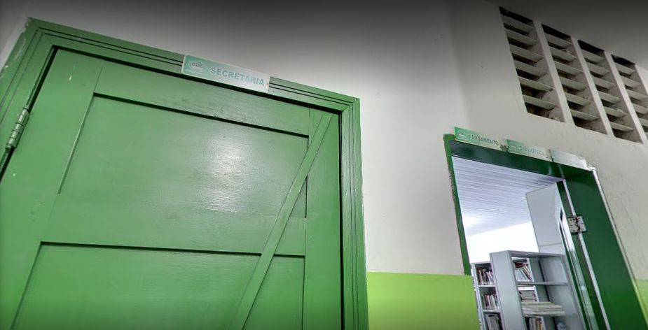

Assim como na Unidade Deodoro, nossa secretaria só pode ser acessada na própria unidade. Localiza-se ao lado da nossa biblioteca, próximo a cozinha. É o setor responsável pelo controle, verificação, registro e arquivamento da documentação da vida acadêmica do aluno, desde seu ingresso na Instituição, até a conclusão e/ou expedição do diploma.
A missão da Secretaria é realizar com presteza e eficácia todos os procedimentos que envolvem o controle e o registro na instituição, assim como orientar os alunos e pais.
Quando devo ir à Secretaria Acadêmica:
- Justificar faltas;
- Renovação de matrícula(anualmente);
- Trancamentos, cancelamentos de matrícula e atestados de matrícula, comprovações;
- Informações sobre o Calendário Acadêmico, Estrutura curricular dos cursos, horários de aulas e quaisquer outras informações que os alunos necessitem envolvendo sua vida ao CDF Colégio e Curso - Unidade Zona Norte.
A quem devo me dirigir na Secretaria:
- Coordenadores: Almino, Sthênyo e Micussi;
- Diretor: Leonardo;
MATRÍCULAS ABERTAS!
Contate-nos:
(84) 3214-5919
Avenida Maranguape, 75, Potengi, Zona Norte de Natal, RN.
CDFZN
- REDES SOCIAIS: